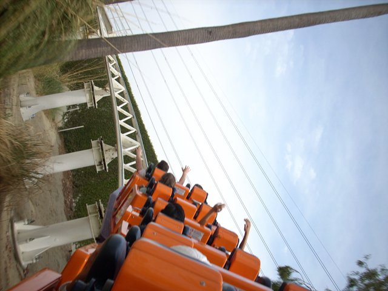
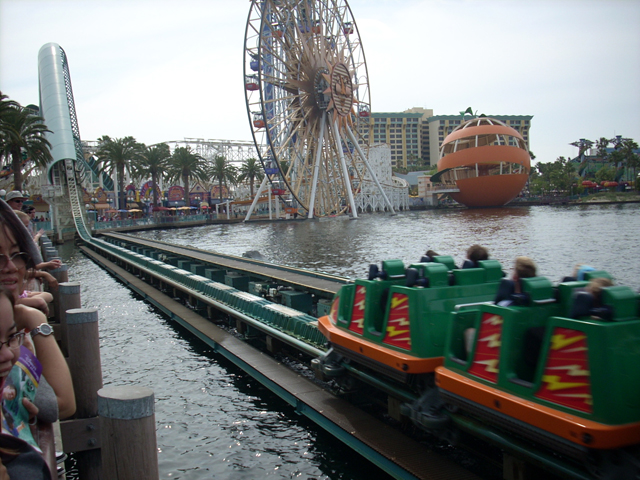
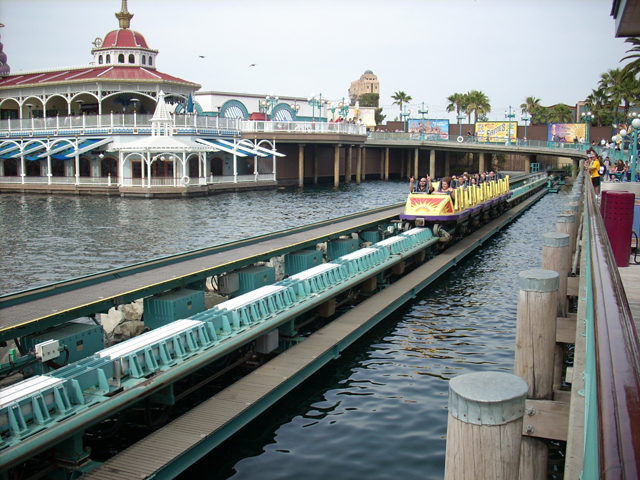
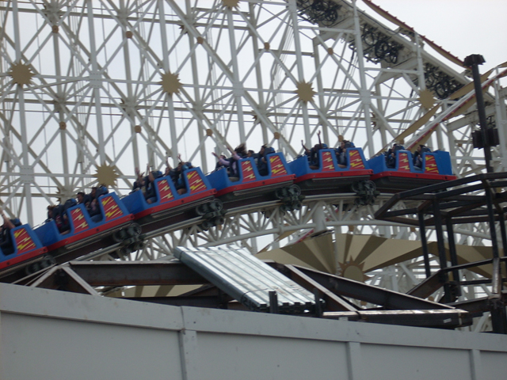
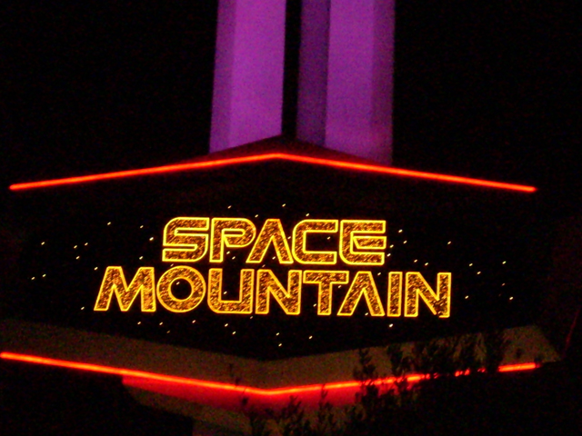

Mound Choir 2007
We're here at Disneyland So Celeste can sing. BTW, This is where we stayed.
And no update is complete without Celeste repeircing her ears.
"Damn you Gravity! You made me lose part of my Ice Cream Cone!!!!"
Disney is smart by doing this so Toy Story Mania can be constructed and people can ride Screamin today as well.
When I ride Tower of Terror, I think of all the better effects Florida Tower has.
We're sorry, but because of the new Illegal Immigrant law, The Choir can not perform last years Mexican Dance.
"Guess what? We ARE going back to Palm Springs this year! You got punked again FOOL!!!!!"
We used to be conjoined Identical Twin Chefs, But we had to disconnect to make ourselves smart.
Someday, I'll grow enough fur on my hand to turn it into a bear paw.
 Anything is better than Psyco Mouse.
Anything is better than Psyco Mouse.
 California Screamin says come ride me 500 times.
California Screamin says come ride me 500 times.
 And thats exactly what we did.
And thats exactly what we did.
Mikey says California Screamin kicks ass!
Here you can see construction on Toy Story Mania from Screamins lift.

And here is California Screamings AMAZING Grand Finale!

If this launched upward, I could fly to the moon!

This has a better launch than Superman. So why isn't Screamin getting all sorts of special treatment. Superman was on the Discovory Channel and it sucks!

Whats that loud sound? Oh thats just God striking down Michael Eizner for putting trims on Screamin.
Beyond that wall will soon be another dark ride.
 California Screamin says Good Bye. Ride me soon.
California Screamin says Good Bye. Ride me soon.
Together, We all unite to make a fatass! (AKA Cameron)
Been there once today, Aint coming back for a LONG time.
I just smoked a bunch of LSD and now I think I'm a bug. Tommorow, I will think I'm a glass of orange juice.
This is the BEST RIDE OF MY LIFE!!!!!!!!!!!!!!!!!!!!!
Flashback to First 2006 Update. Andrew, this is for you since DLR has no Pirate Ship.
There goes Disney with its mouth again. God they're worse than us and Southpark combinded!
 What the hell is wrong with us? We got a Fastpass and got in line, but then it broke down, so we got another fastpass and left. 3 hours later, We went back in line and when we got to the point at the stairs, It broke down AGAIN!! God Damn it Vekoma! Make your rides more reliable!
What the hell is wrong with us? We got a Fastpass and got in line, but then it broke down, so we got another fastpass and left. 3 hours later, We went back in line and when we got to the point at the stairs, It broke down AGAIN!! God Damn it Vekoma! Make your rides more reliable!
These ducks may be able to say the DLR is their home, But SFMM is Codys! Those freaking geese need to go back to Canada where they originally came from!!!!!
This bride is a new effect on the Haunted Mansion.
 Have a great summer while we're stuck in the Matterhorn! Signed Incrediblecoasters.
Have a great summer while we're stuck in the Matterhorn! Signed Incrediblecoasters.
Wow. Its the worlds first steel coaster and now it has the more airtime than any other coaster in the whole resort.
Best job on a parade ever.
I like this shot. Its a long object going into a dark tunnel.

YAY! I get to ride REAL Space Mtn!!!!!
 Wow. Space Mtn broke down again.
Wow. Space Mtn broke down again.
Home